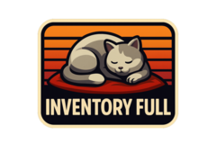
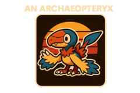

Bhagpuss dives into Soulframe’s pre-alpha, curious whether Digital Extremes’ fantasy spin on Warframe can land better than classic fantasy currently does. Shintar tries WoW Forever on US servers and finds rough sharding, ugly chat, and firsthand proof that the roach army reputation exists for a reason.
Shintar tries WoW Forever on US servers and finds rough sharding, ugly chat, and firsthand proof that the roach army reputation exists for a reason.
 Wilhelm rounds up EVE Online’s CSM21 winners and notes how CCP’s extra picks can balance missing viewpoints—or conveniently reinforce its own.
Wilhelm rounds up EVE Online’s CSM21 winners and notes how CCP’s extra picks can balance missing viewpoints—or conveniently reinforce its own.
 Ghastly walks through starting a biological autumn garden, from clearing beds and mulching to companion planting carrots, garlic, lettuce, and more.
Ghastly walks through starting a biological autumn garden, from clearing beds and mulching to companion planting carrots, garlic, lettuce, and more.

Anarchae breaks down the real cost of being online in Canada, from discounted internet and phone plans to a laptop and NAS.